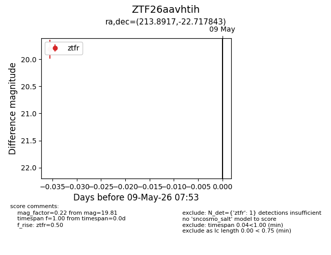
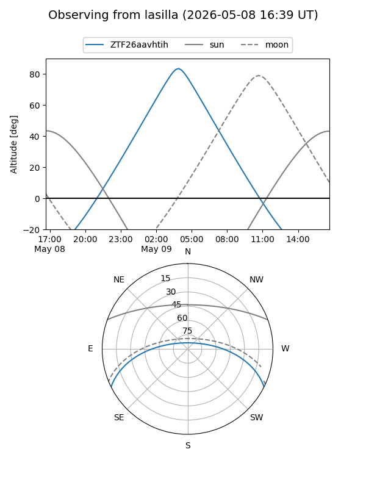
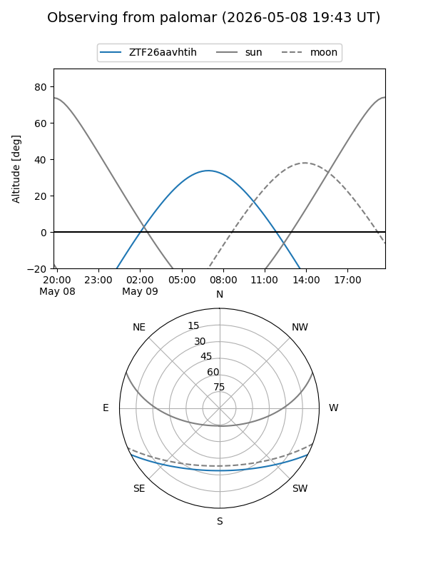
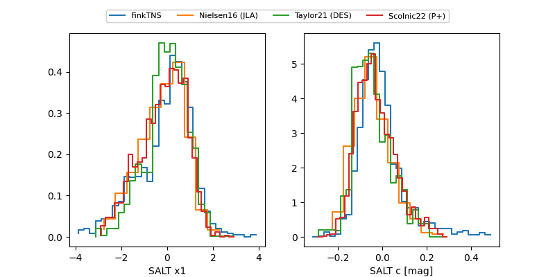

ZTF26aavhtih
Target ZTF26aavhtih at 2026-05-09 07:54
Aliases and brokers:
FINK: link
Lasair: link
ALeRCE: link
alt names
ZTF26aavhtih (ztf,fink_ztf)
Coordinates:
equatorial (ra, dec) = 213.8917,-22.71784
equatorial (HMS+DMS) = 14:15:34.02,-22:43:04.24
galactic (l, b) = (327.1414,+36.16770)
Flags:
Photometry:
last ztfr=19.81
1 ztfr detections
Lightcurve

Visibility


Additional plots
